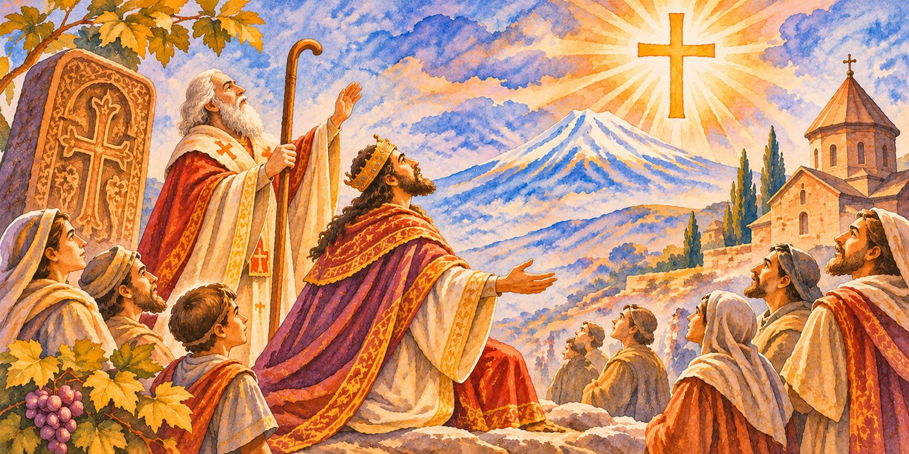

НАЗНАЧЕНА ДАТА ПРЕМЬЕРЫ / Армения ВОЗРОЖДЕНИЕ
Композитор Геворг Хечоян из Еревана написал оперу «Возрождение», основанную на событиях глубокой древности армянского народа. Это важное событие для тех, кто ищет назидания для своей веры в опыте прошлых поколений. Это важно для народа Армении, начинающего, после Бархатной революции, новую страницу своей истории.
Это событие – очень важное свидетельство для меня лично, как художника. Факт, что Бог продвигает такой грандиозный, сложный для реализации проект.
Любой художник имеет массу возможностей опубликовать свое полотно, текст или видео, сделанное с помощью телефона и его увидят тысячи и даже миллионы. Но для композитора - создать и исполнить оперу !? Для этого потребны два оркестра (симфонический и джазовый), вокалисты, хореографические коллективы, декорации, свет, современная техника, аренда оперного театра, много всего. Это не может осилить один человек.
Поэтому сам факт, что молодой композитор Геворг Хечоян, который замахнулся на это, меня воодушевляет. И вся его надежда на Всемогущего. И вот мы видим, что этот грандиозный эпический проект становится реальностью, стремительно приближается к своему воплощению. Назначена дата премьеры !
Посетите страницу Проекта "ВОЗРОЖДЕНИЕ", чтобы узнать больше об опере и как можно помочь этому проекту https://www.facebook.com/110244200331077/
